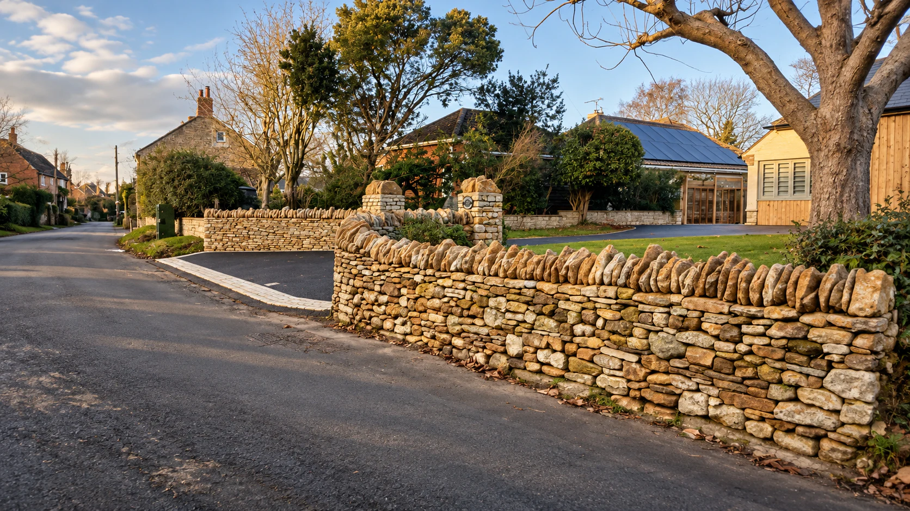
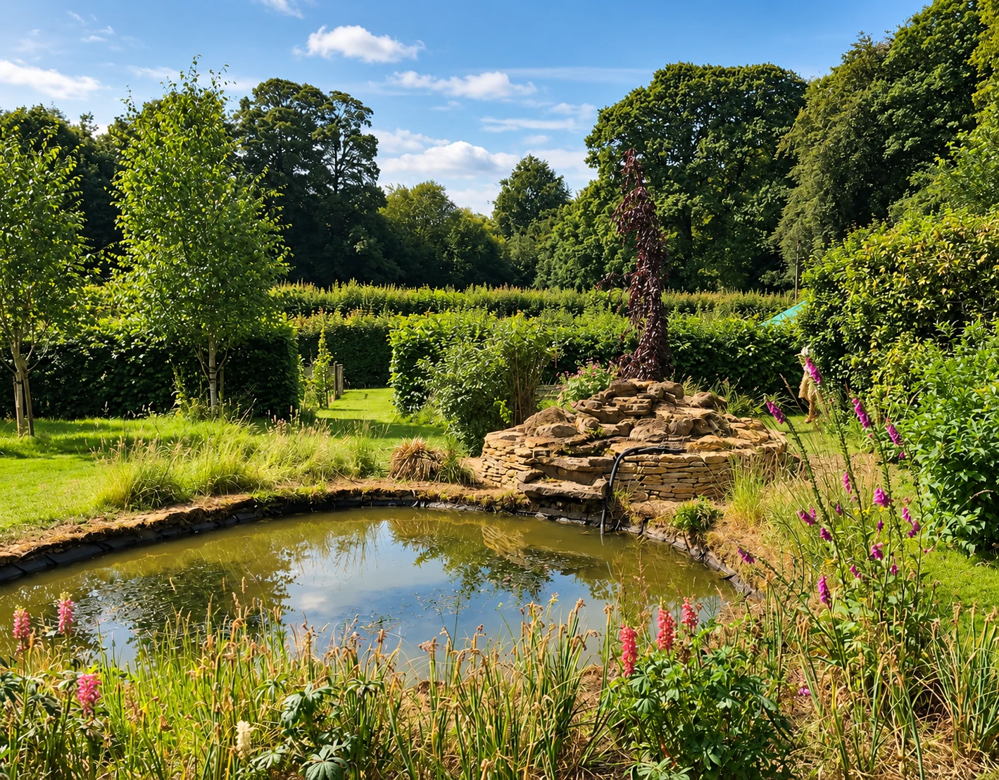
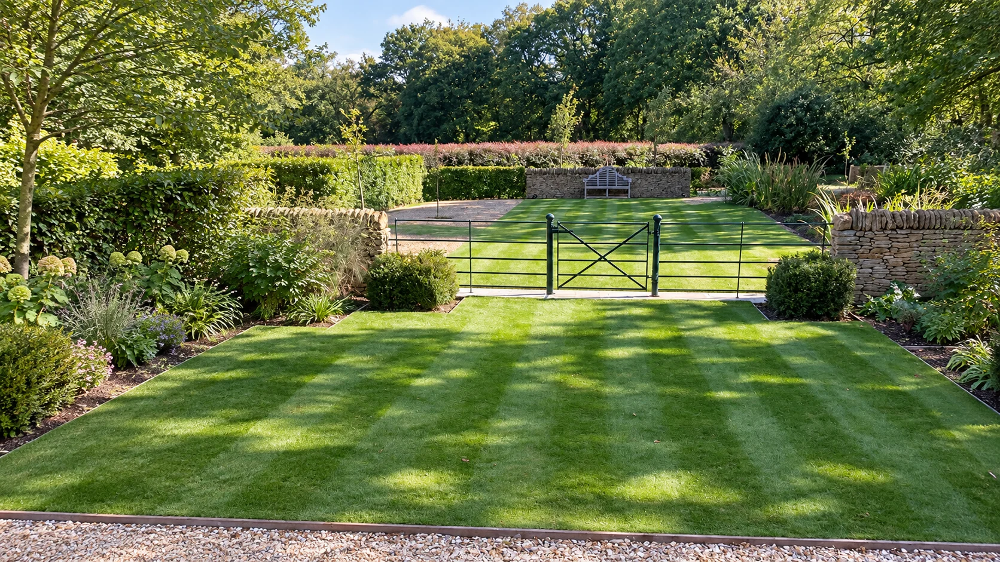
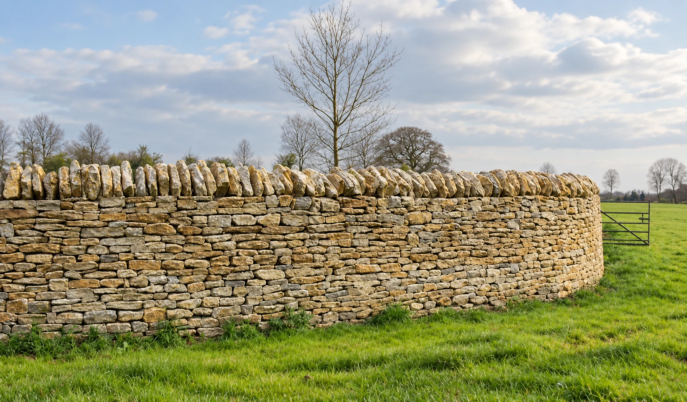
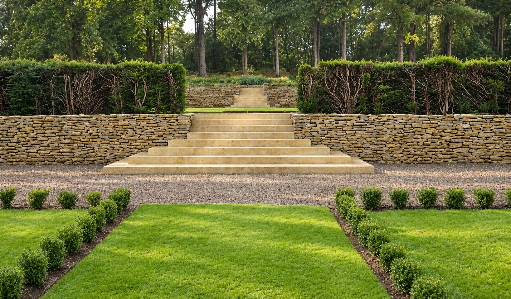
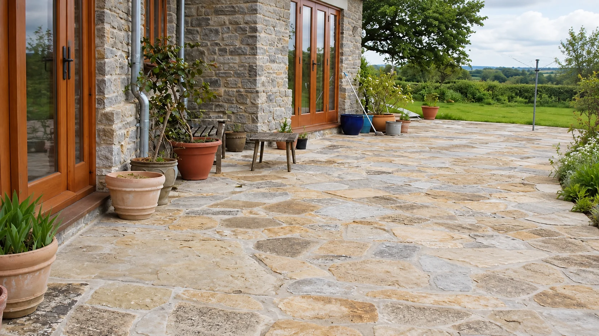
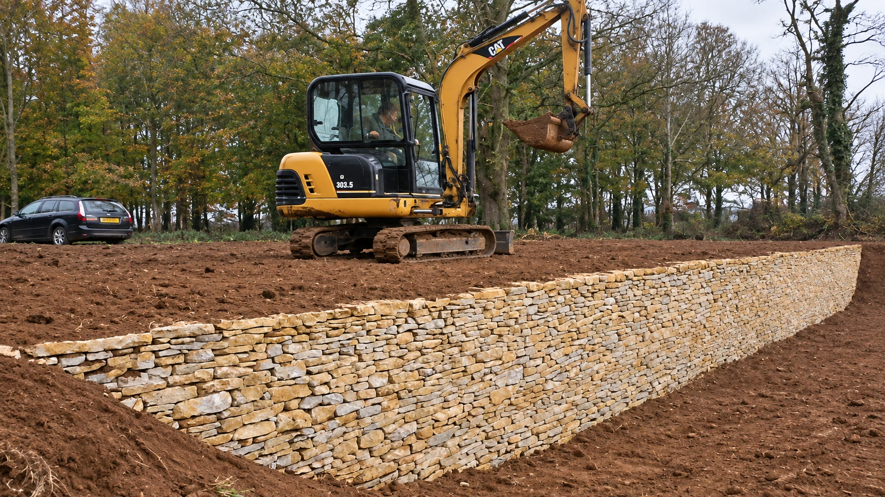
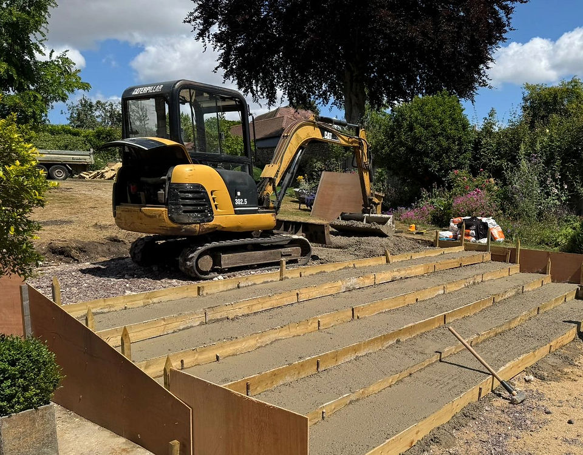

Dry stone walling and landscaping in Somerset
Over thirty years of building dry stone walls, gardens, terraces, steps and paving across Somerset, Dorset and Wiltshire.
- Since 1991 Over three decades of designing and building gardens, steps and stonework
- Hands-on, start to finish We plan, build and finish the work ourselves, from first visit to handover
- Certified waller Patrick is a certified dry stone waller, and we are members of the DSWA
- Somerset, Dorset and Wiltshire Within easy reach of Wincanton, Sherborne, Mere and Yeovil

Bringing your garden to life
Some gardens need a tidy-up. Others need a fresh start: new levels, a proper terrace, steps that make sense, borders that frame the view instead of hiding it.
We look at how you use the space and how the land falls, then plan the paving, steps, walls and planting together so it feels like one garden, not a set of separate jobs.
From there we agree the plan and the order of work, so each stage leads naturally into the next and the finished garden feels settled from the first season.
Our services
From the first sketch to the last stone. Pick one job or hand us the whole plot.

Landscaping
Hard landscaping, garden features, outdoor improvements and bespoke landscaping projects.

Dry stone walling
Traditional dry stone walls, including boundary walls, retaining walls, repairs and restoration.

Steps and terraces
Bespoke stone steps, terracing and raised landscape features designed to suit the surrounding garden.

Paving and patios
Patios, paths and paved areas using durable stone finishes for gardens and outdoor spaces.

Groundworks
Site preparation, excavation, foundations and associated groundwork for landscaping and construction projects.
What customers say
Top-class work from start to finish!
Yenstone Walling did an absolutely fantastic job for us. The stonework looks incredible — proper craftsmanship and attention to detail throughout. The lads who work for Pat are a great team — friendly, hardworking, and really take pride in what they do.
Huge thanks to Patrick for his expertise and eye for detail. Everything was done efficiently, on time, and to the highest standard. Couldn’t recommend Yenstone Walling enough — a brilliant local company!
Stonework project
“A clear quote, a firm start date, and they kept to both. The new terrace and steps have completely changed how we use the garden, and the stonework is beautiful.”
Sherborne
“I was nervous about the mess, but the site was left tidy every evening. They talked me through every choice, and the finished patio looks as if it has always been there.”
Wincanton
“From the first visit to the final handover it felt like one joined-up plan, not a string of jobs. We’ve already had neighbours asking who did the work.”
Yeovil
“Our sloping garden was unusable. The retaining wall and levelled lawn have given us a proper space for the family. Fair price, and the team were a pleasure to have around.”
Gillingham
“Honest advice from the start, including what we did not need to spend money on. The new boundary wall has made the whole front of the house feel finished.”
Shaftesbury
“We had a collapsed wall along the lane and weren’t sure it could be saved. They rebuilt it with the original stone and you honestly can’t tell where the repair starts. Tidy, punctual and lovely to deal with.”
Templecombe
Have a project in mind?
Craftsmanship rooted in stone
Since 1991 we have been designing and building gardens across Somerset, Dorset and Wiltshire. We began with dry stone walling, and the patience and eye for detail it taught us go into every terrace, path and patio we build.
Every job is planned around your garden and your house, built in local stone wherever we can, and finished the way it should be.
- Established in 1991Over thirty years of building gardens and stonework in Somerset, Dorset and Wiltshire.
- Certified wallerPatrick is a certified dry stone waller, and Yenstone is a member of the DSWA.
- Local stone firstWe match the stone of your house and your lane wherever we can.
Recent work
Gardens, terraces, steps, paving and walls we have built in Somerset, Dorset and Wiltshire. Scroll along, or select a photo to see it larger.
How it works
No pressure and no surprises. From your first call to the day we hand the finished work over, you always know what happens next.

-
You call us
Tell us about your property and what you have in mind. Photos help, but they are not essential.
-
Site visit and quote
We come and look, measure up and talk through the options. You get a written quote with the work and the price set out clearly.
-
The build
We agree a start date, build the work and keep you updated. We leave the site tidy at the end of each day.
-
Handover
We walk the finished job with you and explain how to look after it, so it lasts.
We also do
-
Septic tanks
Septic tank installation, including associated excavation, groundworks and drainage requirements.
See septic tanks -
Bespoke ironmongery
Custom-made ironwork and metal features designed to complement gardens, gates, landscaping and stonework.
See ironmongery -
Stone cladding
Traditional and contemporary stone cladding of existing buildings and structures, including lime and mortared walling.
See stone cladding -
Lime mortar pointing
Breathable lime mortar pointing for older stone buildings, walls and traditional masonry.
See lime mortar pointing
Where we work
We are based at Perhams Farm in Yenston, just outside Templecombe, and work across Somerset, Dorset and Wiltshire. If you are a little further out, call and ask.
Somerset
- Templecombe
- Henstridge
- Wincanton
- Milborne Port
- Castle Cary
- Bruton
- Yeovil
Dorset
- Sherborne
- Stalbridge
- Marnhull
- Gillingham
- Shaftesbury
- Sturminster Newton
- Blandford Forum
Wiltshire
- Mere
- Zeals
- Warminster
- Tisbury
- Wilton
- Salisbury
- Westbury
Questions we’re often asked
Straight answers on quotes, timings and what we can take on. If yours is not here, call us and we will talk it through.
Do you give free quotes?
Yes. Call us on 01963 371123 or send the quote form. We arrange a visit to look at the site, talk through what you want and send you a written quote.
Which areas do you cover?
We work across Somerset, Dorset and Wiltshire from our base at Yenston, near Templecombe, including Wincanton, Sherborne, Yeovil, Gillingham, Shaftesbury, Mere and Warminster.
Do you take on small jobs as well as whole gardens?
Yes. Some customers call us for a single patio or set of steps, others hand us the whole garden. Either way we visit, talk through what you want and give you a written quote.
What does landscaping include?
Hard landscaping, garden features and outdoor improvements, from patios, paths and paving to steps, terraces and bespoke projects. If the ground needs preparing first, we can do the groundworks too.
Do you build and repair dry stone walls?
Yes. We build new walls and repair or restore existing ones, including boundary walls, retaining walls, reusing the original stone wherever we can. We also repoint walls and older stone buildings in lime mortar, and do insurance work on walls, with a quote you can pass to your insurer.
How long will my project take?
It depends on the size and the ground we are working with. A short repair can be a matter of days, a whole garden takes longer. We give you a timescale in the quote.
Talk to us about your garden
The quickest way is to pick up the phone. We will answer if we can, and call you back if we are on site.
01963 371123- Mobile
- 07751 278363
- Address
- Perhams Farm, Sally Lovells Lane,
Yenston, Templecombe, Somerset BA8 0NE - Areas
- Somerset, Dorset and Wiltshire
Thank you, we have your details
We will be in touch shortly. If it is urgent, call us on 01963 371123.